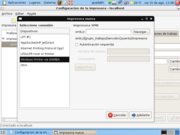

Guia v5/La red doméstica
De Guadapedia, la enciclopedia libre.
| Tabla de contenidos |
La red doméstica
Decíamos en el anterior apartado que GNU/Linux es un sistema operativo nacido por y para la red. En las siguientes páginas vamos a partir de este principio teórico para aplicarlo en la práctica a partir de nuestro escritorio y el de nuestros sistemas vecinos. Y ojo porque en las redes telemáticas la vecindad es un concepto que no necesariamente está relacionado con la proximidad física.
Este capítulo interesa tanto a quienes tienen varios ordenadores en casa o la oficina como a los usuarios de una sola máquina bajo un mismo techo... pero con otros vecinos emocionalmente cercanos en algún lugar de Internet.
Principios básicos
Si la informática es una ciencia, administrar redes ocupa un porcentaje apreciable de dicho conocimiento. Aquí vamos a explicar una parte ínfima de todo lo que se puede escribir sobre la conexión, diálogo y cooperación entre ordenadores. Es posible que muchos de nosotros nos conformemos con muy poco más.
De hecho, lo básico que debemos entender/recordar es lo siguiente:
- La red se ve pero no se toca. Aunque nuestros ojos vean objetos tangibles tales como ordenadores y cables, las redes están formadas por sistemas, carpetas, usuarios y permisos. Nuestro ordenador puede ser inaccesible para el que tenemos al lado aunque ambos estén conectados al mismo enrutador. O puede ser inaccesible para el usuario Pepito pero no para la usuaria Juanita. Por contra, podemos tener en nuestro escritorio carpetas accesibles que, de hecho, están ubicadas en ordenadores al otro lado del océano; no existe conexión física directa y la gestión se realiza a través de Internet.
- Los protocolos comunican, los sistemas operativos no incomunican. Ordenadores con diferentes sistemas operativos pueden compartir recursos entre ellos si comparten un mismo protocolo. Ordenadores con un mismo sistema operativo no se comunicarán entre ellos si usan protocolos diferentes. Hay varios protocolos que cubren varias funciones. El protocolo SMB es utilizado en las comunicaciones con/entre sistemas MS Windows, el SSH nos permite operar en otros ordenadores GNU/Linux como en el propio...
- Hay conexiones en red y conexiones directas. A efectos prácticos, tenemos sistemas conectados en red formando dominios o grupos de trabajo al estilo MS Windows, y tenemos conexiones directas al estilo GNU/Linux. También se pueden crear redes de ordenadores con estilo genuinamente GNU/Linux, pero esto escapa de las pretensiones de esta Guía.
Entendidos estos tres puntos, el resto es sólo cuestión de metodología.
Para poner en práctica alguna de las propuestas detalladas a continuación, nuestro equipo debe disponer de una conexión debidamente configurada y activada, ya sea a través de cable o tarjeta inalámbrica.
Convivencia con MS Windows o Mac
Vamos a empezar con la que posiblemente sea la situación más frecuente entre los usuarios noveles en el software libre: la red doméstica o laboral con presencia de ordenador(es) con MS Windows. O Mac, que para el caso es lo mismo.
La situación más habitual es que ya exista una red local con un dominio de grupo, y allí aterrizamos nosotros con nuestro ordenador (fijo o portátil) convertido a GNU/Linux. Queremos acceder a carpetas de otros usuarios en esos ordenadores y quizás también a impresoras, si las hay. Posiblemente también queramos compartir carpetas nuestras con otros usuarios.
Ningún problema, tenemos todo lo necesario para trabajar en esta red casi sin que el resto de usuarios se den cuenta que trabajamos con un sistema operativo diferente.
Compartir carpetas
Para acceder a carpetas de otros ordenadores bajo la red local, lo único que necesitamos es que los usuarios o administradores con los permisos adecuados hagan esas carpetas compartibles a nivel de toda la red. Una vez hecho esto sólo nos queda llegar hasta la carpeta:
Lugares > Servidores de red
{kind=link}
- Se nos abrirá el Administrador de archivos y veremos como mínimo una Red de Windows. La clicamos.
- Aparecerán los ordenadores conectados a esa red. Debemos identificar el ordenador en el que se encuentra la carpeta compartida a la que deseamos acceder. Lo clicamos.
- Esto nos llevará a ver los recursos compartidos por dicho ordenador. La carpeta compartida nos debería aparecer a la vista.
- Dependiendo de los permisos que se le hayan asignado a esa carpeta, podremos acceder a sus contenidos y modificarlos o añadir nuevos archivos si estamos autorizados para ello.
Si no podemos acceder a la carpeta o a los archivos que hay en ella, deberemos consultar con el administrador de la red o el usuario de ese ordenador.
El proceso a la inversa es casi idéntico. Si queremos compartir carpetas nuestras con otros usuarios debemos marcar dichas carpetas como compartibles y definir los permisos de acceso que queramos aplicarles. Se ha de proceder de la siguiente manera:
{kind=link}
Nos aparecerán las carpetas disponibles en nuestro sistema para ser compartidas.
{kind=link}
Para añadir una carpeta debemos realizar estos pasos:
{kind=link}
- Clicar Añadir.
- Ruta es la ubicación de la carpeta a compartir y que debemos buscar y seleccionar.
- Comparte con se refiere al protocolo a utilizar. SMB aparece como opción seleccionada que debemos usar.
- Nombre es la identificación que le damos a la carpeta a compartir, tal cual la verán los usuarios que accedan desde fuera a ella. Puede ser el mismo nombre actual de la carpeta u otro.
- Comentario es un campo adicional, para ofrecer información sobre la carpeta.
- Sólo lectura indica que los usuarios que accedan a la carpeta podrán visualizar y copiar los archivos que hay en ella, pero no modificarlos o borrarlos, ni añadir nuevos archivos.
- Permitir examinar la carpeta implica que las subcarpetas que haya en la carpeta compartible también serán accesibles, junto con sus contenidos.
- Opcionalmente podemos modificar desde aquí los Parámetros de configuración general para la compartición con Windows, que abordamos a continuación y que nos interesan sólo en el caso de compartir un mismo dominio o grupo de trabajo.
{kind=link}
Aceptamos los cambios y con ello permitimos que nuestra carpeta sea accesible para los usuarios de la red local. Ya estamos en condiciones de compartir nuestros tesoros más preciados.
{kind=link}
Compartir un grupo de trabajo
Las redes de MS Windows agrupan a diversos sistemas bajo un mismo dominio o grupo de trabajo. Si queremos compartir recursos perteneciendo al mismo dominio que el resto, debemos realizar los siguientes pasos.
Sistema > Administración > Red
- Seleccionamos la pestaña General.
- En Nombre del anfitrión nos aparecerá el nombre que le pusimos a nuestro ordenador cuando instalamos el sistema operativo. Ese nombre es el que van a ver el resto de usuarios conectados a la red.
- En Nombre del dominio debemos introducir el dominio o grupo de trabajo al que nos sumaremos. Si no lo sabemos podemos preguntar al administrador de la red o consultarlo en cualquiera de los ordenadores pertenecientes a ese dominio.
{kind=link}
Clicando Aceptar empezamos nuestra introducción en ese dominio. Para comprobar si estamos dentro, vamos a:
Lugares > Servidores de Red
Y clicamos en Red de Windows.
Hay algunas variables por el camino que pueden dificultar la integración, tales como la configuración de la red, el tipo de conexión (mediante cable o tarjeta inalámbrica), etc. Si no nos vemos dentro de la red y nuestros colegas de red no ven nuestro ordenador en el dominio, probemos a reiniciar nuestro sistema.
Compartir impresora
Compartir impresoras en red ha sido uno de los mayores obstáculos en la integración GNU/Linux - MS Windows. En el momento de redactar estas líneas el escollo está casi salvado para un usuario avanzado y sólo en parte para un usuario poco experimentado. Utilizar desde GNU/Linux impresoras conectadas a ordenadores con MS Windows es relativamente sencillo. Pero a la inversa es más complicado.
Si tenemos una impresora conectada a nuestro ordenador con GNU/Linux y queremos que usuarios de MS Windows impriman a través de ella deberemos editar a mano la configuración de CUPS, la aplicación que se encarga de gestionar la impresora. Podemos encontrar las instrucciones en Ubuntu-es [1] (http://www.ubuntu-es.org/node/298).
Instalar una impresora de red
Hay tres diferencias básicas entre operar con una impresora local o una de red y debemos tenerlas muy presentes para instalar con éxito aquellas impresoras que no están directamente conectadas a nuestro ordenador:
- En vez de conectarmos directamente a la impresora, lo hacemos a través de una red local que nos dé acceso al ordenador o servidor donde aquélla esté enchufada. Si no tenemos acceso a la red, ésta no está bien configurada o el ordenador de destino no está encendido y accesible desde la red, tendremos problemas.
- En vez de mandar órdenes de impresión en local, donde se supone que nuestro usuario tiene permisos para imprimir, debemos mandar esas órdenes a través de un ordenador o servidor que debe estar abierto a compartir su impresora y a atender nuestras peticiones. Si la impresora no está compartida o no tenemos permisos de impresión en ella, tendremos problemas.
- En vez de establecer una comunicación directa entre nuestro sistema y la impresora mediante un controlador o driver, nuestro sistema deberá entenderse con el que está gestionando la impresora. Para que esta acción sea posible ambos sistemas necesitan compartir un mismo protocolo, o de lo contrario tendremos problemas.
Sabido esto, sigamos.
{kind=link}
Partimos de la base de que tenemos una impresora conectada a un ordenador o servidor encendido y que ambos se encuentran en una red local debidamente configurada.
- Clicamos en el icono de Impresora nueva.
- La aplicación nos solicitará el protocolo del ordenador o servidor que tiene la impresora conectada. Si se trata de un PC con MS Windows o un Mac debemos seleccionar Windows Printer via SAMBA.
- Introducimos los datos de conexión del servidor y el nombre de la impresora. Podemos usar el botón Navegar... para indicar el equipo y la impresora dentro la red SMB.
- Introducimos nuestro Usuario y Contraseña en el caso de que sean necesarios.Opciones para impresoras compartidas desde Windows (Samba)

- A continuación seleccionamos la marca y modelo de la impresora.
{kind=link}
{kind=link}
{kind=link}
Al final del proceso tendremos la impresora listada como si fuera una impresora local y podremos enviarle documentos como si la tuviéramos conectada a nuestro propio ordenador.
{kind=link}
Conexiones directas a otros servidores
Como hemos comentado anteriormente, podemos establecer conexiones de red con otros ordenadores y servidores aun estando fuera de nuestra casa u oficina, incluso a miles de kilómetros.
Desde nuestro punto de vista, las carpetas a las que tengamos acceso en esos servidores pueden ser un elemento más de nuestro escritorio, como si estuvieran en nuestro disco duro. Las únicas diferencias que notaremos son, a veces, la solicitud de una contraseña de acceso, o un lapso variable de tiempo hasta que se abre la carpeta. Ello dependerá de la potencia del servidor y del tráfico en las denominadas por algunos autopistas de la información y que otros identifican como ciberdespacio.
Extender nuestro escritorio a otros sistemas
Velocidades aparte, lo interesante aquí es asimilar el concepto de que nuestro escritorio no está limitado a nuestro propio ordenador. Podemos acceder a carpetas remotas desde elementos de nuestro escritorio clicándolos igual que para acceder a una carpeta local. Podemos operar con los archivos de una carpeta remota igual que con los archivos de una carpeta local, mediante el mismo Administrador de archivos. Se trata de una simple cuestión de permisos: dónde puede acceder nuestro usuario y dónde no.
Todo lo anterior vale igualmente para ordenadores ubicados en nuestra red local. A nuestro sistema le da igual, con tal que le facilitemos identificación de la máquina a enlazar, ya sea una IP numérica local o un nombre de dominio en Internet. Al otro lado del cable, al sistema de destino también le da igual si quien llama a su puerta es un PC contiguo o un vecino en las antípodas. Si tiene los permisos necesarios, pasará.
Establecer una conexión
Por supuesto, para establecer una de estas conexiones debemos antes saber dónde conectar y para qué. Tenemos ejemplos comunes como mantener una página web, mover ficheros pesados entre ordenadores, administrar un servidor remoto... Estas acciones pueden realizarse también mediante aplicaciones especializadas que, a veces, disponen de más posibilidades que el Administrador de archivos. También hay quien domina el tema y se va directamente a la linea de comandos.
Para empezar, este tres en uno nos basta y sobra:
{kind=link}
Aparece una ventana de configuración, cuyos campos variarán dependiendo del Tipo de servicio que seleccionemos.
{kind=link}
{kind=link}
Hay múltiples combinaciones y vamos a repasar conceptos para entender todas ellas.
- Tipo de servicio se refiere al protocolo que vamos a utilizar para la conexión. Esto está directamente relacionado con el servidor al que vamos a conectar. Es un dato que si no sabemos nos lo aclarará el administrador del servidor remoto. Veamos rápidamente algunas posibilidades:
- FTP público sirve para transmitir archivos a través de un servidor que no nos requiere ninguna contraseña para subir o bajar materiales. Imaginemos que tenemos un archivo que queremos enviar a alguien (o a nosotros mismos, por ejemplo del trabajo a casa) pero es demasiado grande para un disquete y no nos la queremos jugar adjuntándolo a un correo electrónico. Un FTP público nos puede solucionar el problema, con un buscador cualquiera los podemos encontrar.
- FTP (con login) es lo mismo, pero privado. Es un servicio habitual de muchos proveedores de Internet para acceder a nuestro espacio web.
- SSH es un protocolo más seguro y completo, utilizado generalmente por usuarios más avanzados. Debemos seleccionar esta opción para conexiones mediante SFTP, que es una combinación de SSH con FTP (la S es de secure, en español seguro).
- Compartido por Windows utiliza el protocolo SMB, nativo de MS Windows, y nos sirve para conectar directamente con carpetas compartidas con usuarios de este sistema operativo (o Mac, si tienen habilitados los servicios SMB).
- WebDAV (HTTP) es un protocolo más reciente que los anteriores y, por tanto, menos implantado. Su función es precisamente la de tratar carpetas y archivos en servidores web de la misma forma que en servidores locales, facilitando que varios usuarios trabajen sobre los mismos archivos y carpetas. Se utiliza para gestionar contenidos en páginas web o simplemente para almacenar documentos en linea.
- WebDAV seguro (HTTPS) es lo mismo pero aplicado a servidores seguros con capacidad para manejar la transmisión de datos de forma encriptada.
- Dirección personalizada es simplemente un enlace directo a un recurso en Internet, generalmente una página web.
- Servidor es el nombre de dominio o IP numérica del servidor a conectar. Si se trata de un servidor remoto lo más probable es que utilicemos su nombre de dominio, que tendrá el mismo aspecto que el dominio de una web. Si se trata de un servidor local lo habitual es utilizar la IP numérica, que el administrador o usuario de dicho ordenador nos facilitará.
- Puerto es el punto de entrada por el que accedemos al servidor. En caso de duda es mejor dejarlo en blanco.
- Carpeta se refiere a la ubicación en el sistema que tiene la carpeta a la que queremos acceder, partiendo de la raíz del directorio. En caso de duda lo podemos dejar en blanco, ya que de acuerdo con nuestros permisos el servidor nos ubicará donde por defecto nos corresponda.
- Nombre de usuario es el usuario con permisos de acceso al servidor. Puede ser el mismo que el usuario que utilizamos en nuestro sistema o no, dependiendo del servicio y de cómo se haya configurado nuestro acceso.
- Nombre para usar en la conexión es simplemente la denominación que esta conexión va a tener en nuestro sistema y que vamos a ver junto al icono de acceso. Podemos denominar la conexión como queramos, esto no influye en la comunicación con el servidor.
Una vez rellenados los campos tendremos el nuevo enlace correspondiente a la conexión tanto en el menú de Lugares como en la carpeta de Servidores de red también bajo Lugares. Si lo deseamos, podemos disponer de un lanzador o acceso directo simplemente arrastrando el icono desde cualquiera de estas ubicaciones hasta el fondo del escritorio.
Recibir conexiones
Hemos visto cómo conectarnos a otros sistemas que hagan las funciones de servidor. También podemos jugar a la inversa y recibir conexiones actuando como servidores. Para recibir conexiones dentro de una red local y montar algunos tipos de servicios es realmente sencillo y sólo deberemos instalar algún paquete adicional. Por ejemplo, activando el servidor SSH que nos permite aceptar conexiones vía SSH.
Aparte del tipo de servicio, el dato que tendremos que facilitar a quienes conecten directamente a nuestro sistema es nuestra IP. Para saber la IP actual de nuestro ordenador debemos ir a:
{kind=link}
En Dispositivos seleccionamos el Dispositivo de red a través del cual nos estemos conectando actualmente (eth0 se refiere al cable de red, ath0 o wlan0 a una conexión inalámbrica) y veremos nuestra Dirección IP bajo el protocolo IPv5. Sí, de entrada es algo un poco complejo, y esto es sólo el principio.
{kind=link}
A partir de aquí, los niveles de complejidad de administración de redes son casi infinitos. Introducimos algunas nociones en el capítulo 8 (Yo también sirvo).
Si nuestra preocupación es simplemente la transmisión de ficheros podemos optar por herramientas de Internet de sencillo uso preparadas para realizar estas acciones P2P, de par a par, como aMule o Gaim. Más sobre todo esto en el siguiente capítulo, donde repasamos los programas que lleva preinstalados nuestra distribución GNU/Linux.
Sigue: Mil y un programas libres y gratuitos